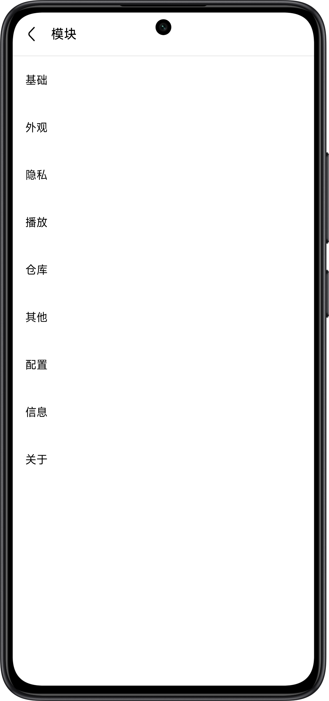
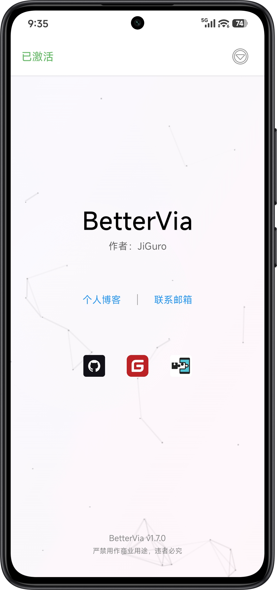

终于能在 Via 里痛痛快快看视频了——一个上班族的 BetterVia 救急夜
Via 浏览器有资源嗅探和去广告，但在腾讯视频、B 站这些站点上全被白名单废掉了。一个加班到深夜的晚上，BetterVia 帮我把三套白名单一次性全解开，顺手还换了个暗黑主题。
那天晚上九点半，我抱着笔记本坐在公司楼下的便利店门口。
加班到十点是常事，但那天不一样——公司 wifi 坏了，我只能用手机开热点，而且我已经在 Via 里盯着腾讯视频的播放页足足五分钟了，长按照片的弹出菜单里，就是没有资源嗅探的入口。
这不是第一次了。Via 是我用了两年的浏览器，资源嗅探、去广告、油猴脚本三个功能是当初选它的理由。但不知道从什么时候开始，这三个功能在几个头部站点上集体失效。我之前以为是腾讯那边改了页面结构，直到那晚我搜了一下才发现——不是页面的问题，是 Via 自己把功能关掉了。

白名单，其实是功能黑名单
Via 从 Android 4.4.1 开始内置了三套硬编码的白名单。名字叫「白名单」，实际作用恰恰相反——名单里的站点，Via 会主动关闭对应的功能，用户进设置也开不了。
我在一个逆向分析的帖子里看到了完整的列表：资源嗅探白名单有七个站点，腾讯视频、优酷、爱奇艺、芒果 TV、B 站、喜马拉雅、腾讯视频另一个域名全在里面；广告拦截白名单四个，优酷、爱奇艺、芒果 TV、腾讯主页；浏览器脚本白名单最轻，只封了腾讯视频的两个域名。
官方没说过为什么要做这个限制。社区里的猜测倒是一致——版权合规或者商业合作。不管出于什么原因，对用户来说就是：我用 Via 最看重的三个卖点，在我最常用的站点上集体哑火。
那天晚上我打开搜索引擎，顺着几条线索找下去，最后停在了BetterVia 官网。这个模块的目标很直接——解除 Via 的三套白名单，不只是绕过，是强制把所有站点从名单里移除。
装完的那一刻，长按出来了
BetterVia 是一个 LSPosed 或 LSPatch 上的安卓增强模块。我没 root，走的是 LSPatch 的路子——从官方下载拿到模块 APK，用 LSPatch 修补 Via 的安装包，直接把模块嵌进去，重新安装就行。整个过程十分钟，中间没报错。
打开修补后的 Via，设置页里多了一个 BetterVia 的入口。点进去，三个开关整整齐齐摆在最上面：解除资源嗅探白名单、解除广告拦截白名单、解除浏览器脚本白名单。三个都开，重启 Via。
然后我回到腾讯视频的播放页，长按那张封面图。

资源嗅探的入口，出来了。
不只是解开白名单，还顺手换了个皮肤
解开白名单只是基础功能。我把 BetterVia 的面板往下划，发现它还内置了一套主题引擎。Via 自己的主题只有浅色深色两档，而且切换要重启浏览器，我之前嫌麻烦一直用默认。
BetterVia 的主题引擎不一样——切换即时生效，不需要重启。我试了几个预定义的，深色、Material You 取色、透明玻璃，最后停在了一个叫「复古终端」的主题上。等宽字体，绿色高亮，像老式 CRT 屏幕。Via 原来的地址栏、侧边栏、设置页，一瞬间都变成了终端风。网页内容不受影响，该什么样子还是什么样子，只有浏览器自己的界面被染了色。更多主题和进阶玩法去bettervia 文档里翻，十多项隐私保护和行为定制的选项都有。
几个月后的复盘
那晚之后我没再换过浏览器。BetterVia 也一直在更新，从最初只做解除白名单，到后来加了十多项隐私和界面层面的扩展。开发者是 JiGuroLGC，独立开发者，GitHub 上的仓库维护得不算勤，但版本号一直在往前走。
现在回想起来，那五分钟的搜索其实是我这两年在 Via 生态里做的最有性价比的一次折腾。白名单的硬伤没了，顺手还解决了主题的问题。免费，完全免费——官方说如果有人卖就是盗版，GitHub Releases 和 Gitee 上都能直接下。
安装的两条路
BetterVia 支持两种运行方式，选哪条看你设备有没有 root：
- 已 root 的设备：LSPosed 管理器里加载模块，作用域只勾 Via 浏览器进程
- 免 root 的设备：用 LSPatch 修补 Via 安装包，把模块嵌进去再安装
两条路都能跑，功能一模一样。我走的第二条，因为不想折腾 root。修补的时候记得用干净的 Via 安装包，别用已经改过的版本。
给还在犹豫的朋友
如果你也是 Via 用户，也在那几个站点上被功能禁了，直接装就行。模块本身不大，修补 Via 的过程也没想象中复杂——本质上就是把一个 APK 嵌到另一个 APK 里。装完打开，三个开关全开，重启 Via，试试看。
之后按需摸索就行，十多项扩展功能够你慢慢折腾一阵的。
GitHub上的仓库一直保持更新，国内用户也可以直接走Gitee镜像，代码同步得及时。另外GitCode上还有一份镜像备份，怕两边都挂的时候可以从那边拿。